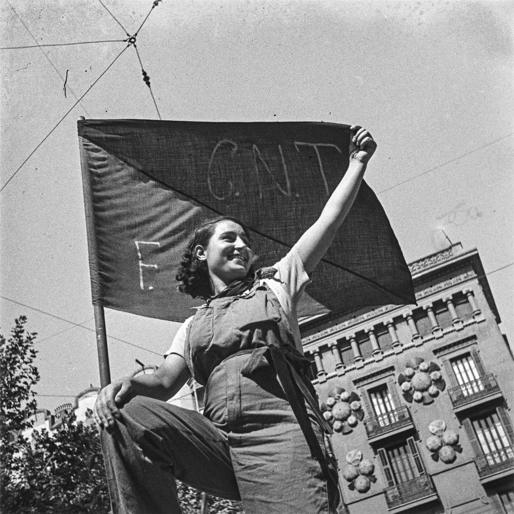

Ce dossier raconte la guerre d'Espagne du point de vue des anarchistes qui l'ont vécue : la CNT (Confédération nationale du travail, anarcho-syndicaliste) et la FAI (Fédération anarchiste ibérique). Pour eux, 1936 n'est pas seulement une guerre contre le fascisme : c'est une révolution sociale, que la guerre et leurs alliés ont fini par étouffer.
Avant 1936 : un mouvement de masse

- 1910 : fondation de la CNT à Barcelone. Ni parti ni permanents payés : des syndicats qui veulent préparer la société future par l'action directe.
- Pendant vingt-cinq ans, grèves, répression, clandestinité. La CNT devient la plus grande organisation ouvrière d'Espagne, surtout en Catalogne, en Aragon, au Levant et en Andalousie.
- 1927 : création de la FAI à Valence, fédération de groupes d'affinité chargée de garder la CNT sur une ligne anarchiste.
- Autour d'eux, tout un monde : les athénées libertaires (centres culturels de quartier), des écoles rationalistes, des journaux comme Solidaridad Obrera, des coopératives.
La République ne change pas la vie
La Seconde République, proclamée en avril 1931, déçoit vite les ouvriers et les paysans sans terre : la réforme agraire avance à peine, la police tire sur les grévistes. En janvier 1933, à Casas Viejas (Andalousie), des paysans proclament le communisme libertaire ; la garde d'assaut massacre une vingtaine de personnes. En 1934, dans les Asturies, anarchistes et socialistes s'insurgent ensemble ; l'armée, commandée entre autres par Franco, écrase la commune ouvrière.
Mai 1936 : le programme de Saragosse
Au congrès de Saragosse, la CNT adopte une motion sur le communisme libertaire : la société future reposera sur la commune libre, assemblée de tous les habitants, fédérée avec les autres communes et avec les syndicats d'industrie. Pas d'État, pas d'argent à terme, la production organisée selon les besoins. Deux mois plus tard, ce programme va être mis en pratique.
19 juillet 1936 : le peuple en armes

Le 17 juillet, une partie de l'armée se soulève contre la République. Le gouvernement hésite à armer la population. À Barcelone, les comités de défense de la CNT n'attendent pas : les 19 et 20 juillet, avec des ouvriers de tous les quartiers et une partie des gardes d'assaut, ils battent les militaires rue par rue. Francisco Ascaso est tué devant la caserne d'Atarazanas.
Le pouvoir est dans la rue. La CNT-FAI, majoritaire, refuse pourtant de « prendre le pouvoir » : elle accepte de siéger dans un Comité central des milices antifascistes avec les autres organisations, en laissant subsister le gouvernement catalan. Ce choix pèsera lourd.
L'été de la révolution
En quelques semaines :
- les ouvriers prennent en main usines, transports, téléphone, boulangeries, hôtels, spectacles ;
- dans les campagnes d'Aragon, de Catalogne, du Levant et de Castille, les paysans mettent les terres en commun et créent des collectivités ;
- des colonnes de miliciens volontaires partent vers le front d'Aragon, dont la colonne Durruti le 24 juillet ;
- les églises et les registres de propriété brûlent ; les tribunaux et la police sont remplacés par des patrouilles et des comités.
Le nombre exact de personnes vivant en collectivité reste discuté : les estimations vont de plusieurs centaines de milliers à plus d'un million. La suite du dossier montre comment ces collectivités s'organisaient.
Chronologie
- 1910Fondation de la CNT à Barcelone.
- 1927Fondation de la FAI à Valence.
- Avril 1931Proclamation de la Seconde République.
- Janvier 1933Massacre de Casas Viejas.
- Octobre 1934Commune des Asturies, écrasée par l'armée.
- Avril 1936Naissance de Mujeres Libres.
- Mai 1936Congrès de Saragosse : le programme du communisme libertaire.
- 17-20 juillet 1936Coup d'État ; victoire populaire à Barcelone.
- Été 1936Collectivisations des terres et des entreprises ; départ des colonnes vers l'Aragon.
- Octobre 1936Création du Conseil régional de défense d'Aragon, à majorité libertaire ; dissolution du Comité central des milices.
- Novembre 1936Quatre anarchistes entrent au gouvernement central. Mort de Durruti à Madrid.
- Février 1937Congrès de Caspe : fédération des collectivités d'Aragon. Début de la militarisation des milices.
- Mai 1937Journées de mai à Barcelone : la police attaque le central téléphonique tenu par la CNT.
- Août 1937Dissolution du Conseil d'Aragon ; des collectivités sont démantelées par la troupe.
- Janvier-avril 1939Chute de Barcelone, Retirada vers la France, victoire de Franco.
Dans ce dossier
- L'organisation : CNT, FAI et collectivités, avec schémas.
- Milices, Mujeres Libres et débats : ce qui a marché, ce qui a cassé.
- Dans la bibliothèque : Durruti n'est pas mort ! d'Emma Goldman.
Sources et pour aller plus loin
Lire
- Hommage à la Catalogne, George Orwell, 1938.Un volontaire anglais dans les milices de Barcelone et d'Aragon : le témoignage le plus lu.
- Le Bref Été de l'anarchie, Hans Magnus Enzensberger, Gallimard, 1975.La vie et la mort de Durruti, racontées par un collage de témoignages.
- La Guerre d'Espagne. Révolution et contre-révolution (1934-1939), Burnett Bolloten, Agone, 2014.La grande histoire de la révolution et de son étouffement par le camp républicain lui-même.
Regarder
- Land and Freedom, Ken Loach, 1995.Le film sur les milices et la révolution, avec la célèbre assemblée sur la collectivisation.
- Libertarias, Vicente Aranda, 1996.Le film des miliciennes de Mujeres Libres parties avec la colonne Durruti, à voir dans la vidéothèque de Mamie, sous-titré en français.
- Vivir la utopía, Juan Gamero, 1997.Un documentaire de la télévision espagnole, fait de témoignages d'anarchistes qui ont vécu la révolution.
Sur le web
- La révolution sociale espagnole de 1936Un article détaillé sur Wikipédia.
- Buenaventura DurrutiLe milicien légendaire.
Dossier rédigé par la bande à Mamie à partir de travaux d'historiennes et d'historiens et de textes des mouvements concernés. Libre de reproduction.